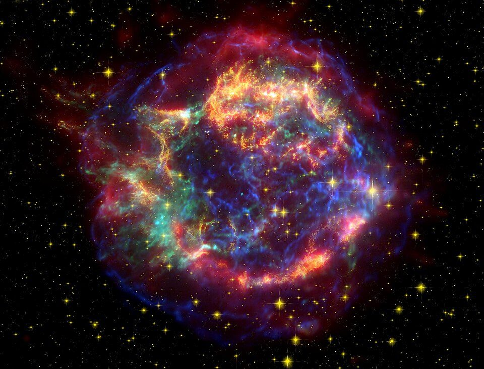

Supernovas
Las explosiones más violentas desde el Big Bang: una estrella que brilla más que toda su galaxia y fabrica el oro y el hierro del universo.


Una supernova es la explosión de una estrella. Durante unas semanas, una sola estrella puede brillar tanto como miles de millones de soles, más que la galaxia entera que la contiene. En una galaxia como la nuestra se produce, de media, una o dos cada siglo.
Dos formas de estallar
- Colapso del núcleo: cuando una estrella de más de unas ocho masas solares agota su combustible, su núcleo de hierro se desploma sobre sí mismo en menos de un segundo. El material que cae rebota y sale despedido a decenas de miles de kilómetros por segundo. En el centro queda una estrella de neutrones o un agujero negro.
- Tipo Ia: una enana blanca que forma pareja con otra estrella le roba materia poco a poco. Cuando supera un límite de masa, unas 1,4 veces la del Sol, se enciende de golpe y se desintegra por completo.
Las de tipo Ia tienen casi siempre el mismo brillo máximo. Por eso sirven como «candelas estándar» para medir distancias. Gracias a ellas se descubrió en 1998 que la expansión del universo se está acelerando, un hallazgo que ganó el Premio Nobel en 2011 y que dio lugar a la idea de la energía oscura.
Supernovas históricas
- 1006: la estrella más brillante que se recuerda, visible durante meses y registrada en China, Egipto, Irak, Japón, Suiza y quizá en pinturas rupestres de Norteamérica.
- 1054: vista por astrónomos chinos y árabes. Sus restos forman la nebulosa del Cangrejo.
- 1572: la observó Tycho Brahe y demostró que el cielo no era inmutable, como se creía desde Aristóteles.
- 1604: la última vista en nuestra galaxia, estudiada por Johannes Kepler.
- 1987: SN 1987A, en la Gran Nube de Magallanes, la más cercana en casi cuatro siglos. Por primera vez se detectaron los neutrinos de una supernova, horas antes de verse la luz.
Fábricas de elementos
Las supernovas esparcen por el espacio los elementos que la estrella fabricó durante su vida, y en la propia explosión forman otros nuevos. Sin ellas no existiría el hierro de nuestra sangre ni el oxígeno que respiramos. Los elementos más pesados, como el oro y el platino, se forman sobre todo en las kilonovas, los choques de dos estrellas de neutrones. El oro de un anillo procede de una catástrofe cósmica anterior al Sol.
¿Peligro para la Tierra?
Una supernova a menos de unos 30 años luz podría dañar la capa de ozono. Por suerte, no hay ninguna estrella candidata tan cerca. Betelgeuse, la más famosa de las que explotarán «pronto», está a unos 550 años luz. Cuando estalle, quizá dentro de 100.000 años, se verá en el cielo tan brillante como la media luna, incluso de día, durante semanas, sin ningún riesgo para nosotros.
Vídeos para entenderlo mejor
- ¿Qué es una supernova y cómo se forma?Astronomiaweb · 158 mil visualizaciones
- Vivimos en un Cementerio de SupernovasAstrum Español · 157 mil visualizaciones
Los vídeos son de YouTube y de sus autores. Se cargan solo al pulsar sobre ellos. Ver todos los vídeos →